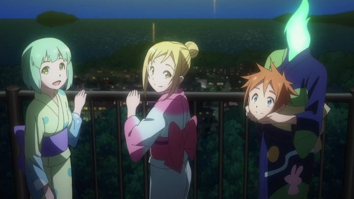

Ever since the successful "Monster Musume" manga (translated as "Everyday Life with Monster Girls" for the anime), there's been an explosion of anime in the genre of... monster girls. One of the most obvious spin-offs was the 2017 series "Interviews with Monster Girls," based on a manga series that started shortly before the "Musume" anime aired. It actually has an interesting angle, even if it falls back on too many typical tropes to be just another slice-of-life comedy.The main character is Mr. Tetsuo Takahashi, a biology teacher at a local high school. In the show's alternate modern world, some humans have randomly mutated into standard monsters (imagine vampires, zombies, mummies, etc.), and eventually, humans grew accustomed to them living among us out in the open. Tetsuo even wanted to finish his PhD on these "demi-humans," but he hadn't actually met one yet (they were still rare and discrete). Things change one day when a new teacher in school explains to the staff that she is a succubus, explaining how it affected her commute to work. In the same day, Tetsuo also discovers three students at the school (a vampire, a dullahan, and a snow queen) are also demi's. Tetsuo can't believe his luck, and the students (all girls) don't seem to mind answering some questions about their unique nature. Thus begins a series of after-school interviews for Tetsuo to better understand the subject he was so interested in.Right away, the premise stands out in a pleasant way. The lead male character isn't a high-school student, but is a grown adult. This also means he surely can't be the romantic interest for the nearly all-female cast. And the idea of conducting interviews allows for smart creativity. All the same fairy tales exist on these monsters, but don't represent the realities, and they're rare enough that there isn't much literature or people to talk to. For example, we learn that vampires actually don't mind garlic, but later learn that this is explained by them having heightened senses, including being sensitive to strong smells and tastes. We learn that snow queens tend to be worried about the possibility to freeze everyone accidently, but that their power typically isn't that strong, leading to an unfounded life of lonlieness. When "Interviews" focuses on these interviews, the show can be fascinating and feel fresh. The world of the show also treats these mutations as just something individuals live with, like a disability. It's rude to call it that, as some of the demi's are more able'd than other humans, but aspects of their abilities require extra consideration for accessibility at school and work. For example, Sakie, the succubus teacher, purposely lives in a house far out of town, away from society, to prevent her accidently triggering an arousal from strangers (humorously, she purposely wears frumpy clothing to hide her body for the same reason). With this in mind, the principal is understanding when Ms. Sakie is late. Beyond this, the demi's are all just normal girls, who worry about classes, hanging out, dating boys, and laughing with each other. It's cute, but not as cute and empty as most "cute-girls-doing-cute-things" anime. And there's no awkward romance-led fanservice. ... at least, there shouldn't have been. Sakie the teacher grows to have a crush on Saito, triggered by his gentleman-like lack of reaction to her body. Kyoko the dullahan also has a crush on Saito, her teacher, and his big arms and teddy-bear body. Hikari, the hyperactive and mischivous vampire, can't help but delight, and maybe gives Saito a kiss at one point. So we get a lot of the girls talking about boys, talking about Saito, blushing terribly, thinking about him at the bool in their swimsuits, thinking about him while naked in the bath... you get the idea. It's all pretty harmless, but feels like a typical trick to sell more copies of the anime. Similarly, the "interview" idea gets lost at some point, with the show only reminding itself to return to it after a few empty episodes. Intead of being purely educational and world-building, the show addresses fears about making friends, bullying, overcoming shyness, and most of all, just teasing and hanging out. Basically, "slice-of-life," with little effect on the characters being monsters. And that's most of the show, when it should be the other way around. It's a shame, since there's so much in potential avenues that don't get visited in terms of world-building, science and history.In shows like this, everything relies on the likability of the characters, and thankfully they're fun to watch. Hikari in particular is memorable, and Tetsuo is a thoughtful teacher when he isn't focused on his research questions. The cast is a little small; including the monster teacher, there's only four demi-characters, all of whom are fully detailed in the first few episodes. It could stand to be bigger, and perhaps with more male characters. The voice cast does a good job brining modern slang and energy to the conversations (I watched with the English dub). The show is 12 episodes, plus 1 OVA, but strangely, the end of episode 11 felt like the real ending, with the rest just being padding... ad the show was kind-of overstaying its welcome by then already. The production values were otherwise kinda ho-hum. Character designs are unique enough, but they and the world are otherwise typical (the school and homes in the background could have been taken straight out of another anime). Animation is surprisingly minimalist for a somewhat popular 2017 production, a disappointment. "Interviews with Monster Girls" does what it sets out to do, to be a calming, heart-warming series. Like countless other anime. But with a little fantasy and monster-legends for flavor. It's cute, it's fun, it's fine. But it's not so unique that it's worth worrying about.
- "Ani" More reviews can be found at : https://2danicritic.github.io/ Previous review: review_Interspecies_Reviewers Next review: review_Inu-Oh